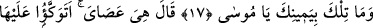
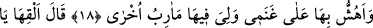
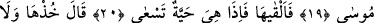
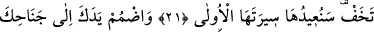
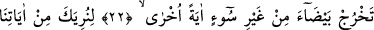
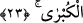
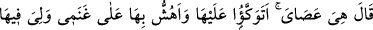
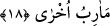

HZ. MÛSÂ VE MÛCİZELERİ
17. Şu sağ elindeki ki nedir, ey Mûsâ?”
18. Dedi ki: “O benim asâmdır. Ona dayanırım, onunla davarlarıma yaprak
silkelerim, benim ona başka ihtiyaçlarım da vardır.”
19. “Allah: “Yere at onu, ey Mûsâ!” dedi.
20. Onu hemen yere attı. Bir de ne görsün, hızla sürünen bir yılan değil mi!
21. Allah buyurdu: “Al onu! Korkma! Biz onu şimdi ilk hâline döndüreceğiz.”
22. “Bir de elini koltuğunun altına sok ki, bir başka mûcize olmak üzere o,
kusursuz ve lekesiz beyazlıkta çıksın.”
23. “Ta ki sana en büyük ayetlerimizden bazılarını gösterelim.”
“Şu sağ elindeki ki nedir, ey Mûsâ?” Bu soru, müsemmânın/isimlendirilenin
mâhiyeti, onda olan hakîkat hakkındadır. Bu, meselâ “Zeyd nedir?” sorusu, “Zeyd”
kelimesinin ad olduğu şeyin hakîkati nedir?’ mânâsınadır. Bu soruya “O insandır, başka
bir şey değil.” diye cevap verilir.
Kâşifî der ki: “Mûsâ (a.s.) mukaddes vâdîde ayakkabılarını çıkarınca ona bu hitap
ulaştı.”
Allah Teâlâ Hz. Mûsâ’ya “Elindeki nedir?” diye sormamış, “Sağ elindeki nedir?”
diye sormuştur. Çünkü aksi durumda Mûsâ (a.s.)’ın sol elinde de yüzük gibi bir şey
olabilir ve bu kafasını karıştırabilirdi. Bu sorunun sırrı inşallah ileride açıklanacaktır.
18. Dedi ki: “O benim asâmdır. Ona dayanırım, onunla davarlarıma yaprak
silkelerim, benim ona başka ihtiyaçlarım da vardır.”